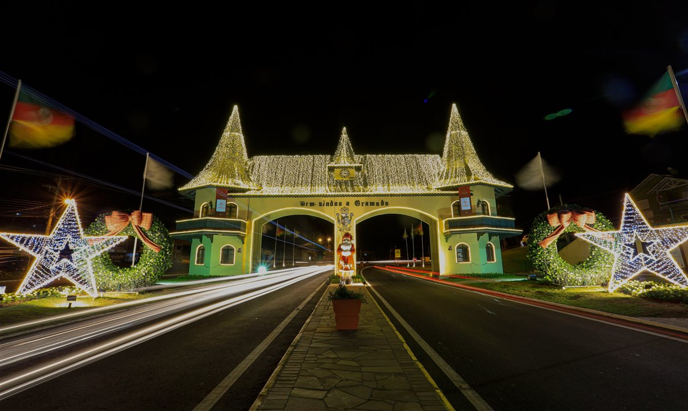
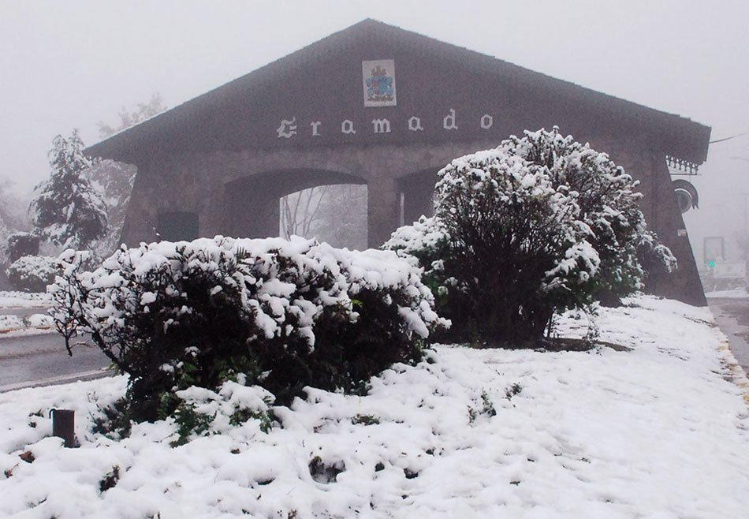
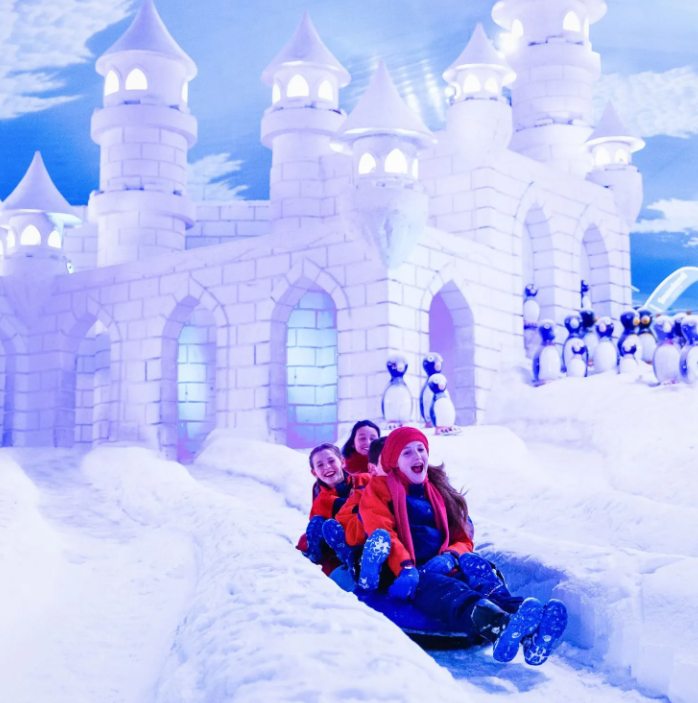
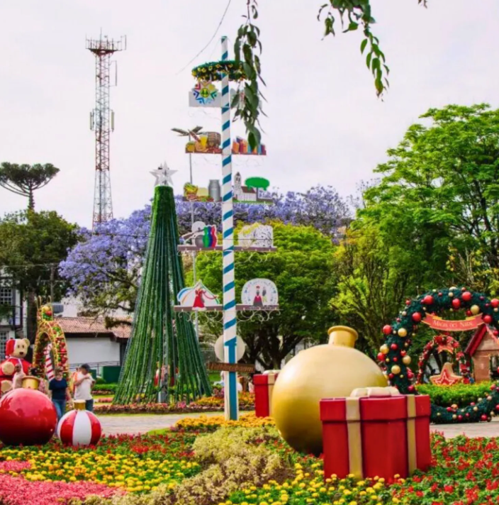
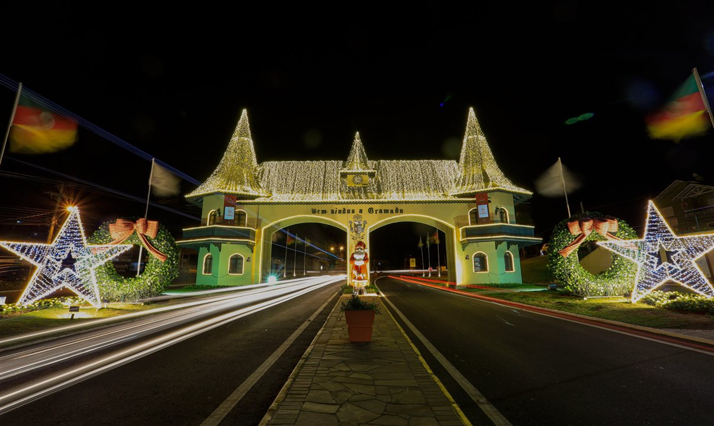
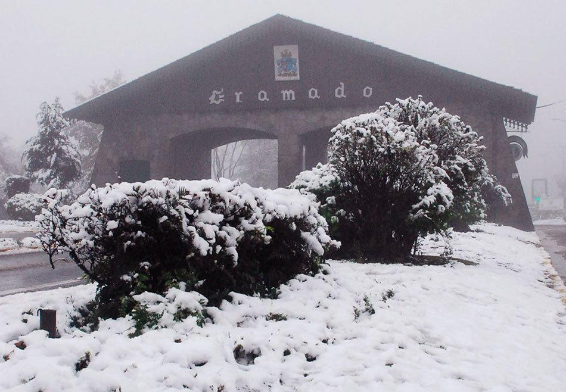
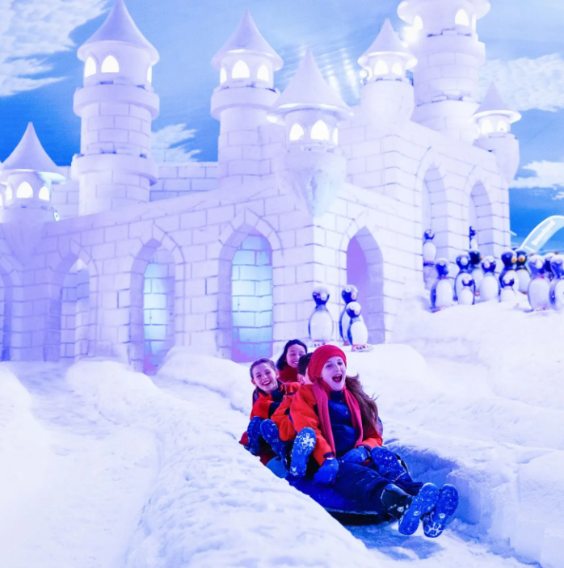
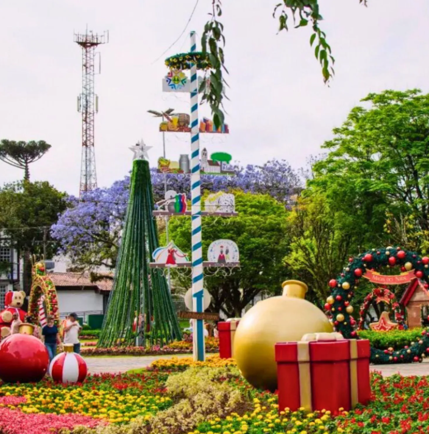

Sobre Gramado
A Serra Gaúcha é o destino ideal para quem gosta de aproveitar e celebrar o Natal. A data é marcada por inúmeras atrações nas cidades da serra, como o Natal Luz de Gramado e o Sonho de Natal, em Canela. No entanto, temos mais um grande evento natalino que se destaca na Serra Gaúcha:
A época natalina é marcada por todo um contexto que envolve fé, tradição e alegria, proporcionando sensações e emoções únicas. Além das luzes iluminando as casas e daquele clima de magia no ar, diversas cidades realizam grandes eventos neste período do ano, trazendo novos sentimentos para quem as visita. Por isso, a Serra Gaúcha é perfeita para quem busca conhecer o charme natural da região aliado à todas as cores e alegria que só o Natal proporciona.
 






